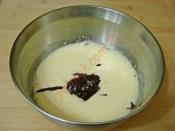
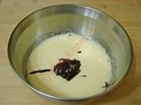

.jpg)
.jpg)
 
Kolay sufle yapımı için; öncelikle orta boy bir tava içine 50 gr (1 yemek kaşığı dolusu) tereyağı koyup, kısık ateş üzerinde yakmadan eritin.
Eriyen yağın üzerine 80 gr bitter çikolatayı küçük küçük doğrayıp, ekleyin. Ardından kısık ateş üzerinde çikolataları sürekli karıştırarak, erimesini sağlayın.
Çikolatalar tamamen eridikten sonra ocağın altını kapatın.
Eriyen çikolatanın üzerine yarım su bardağı un koyun.
Pürüzsüz bir kıvam elde edene kadar unu kaşık yardımı ile iyice karıştırıp, ılımaya bırakın.
Tarifte kullandığım su bardağı ölçüsü 200 ml dir.
Diğer tarafta orta boy derin bir kap içine 2 adet yumurta kırın. Yumurtalar çok küçük olmasın.
Yumurtaların üzerine yarım su bardağı toz şeker ekleyin.
Yumurta ve şekeri mikser yardımı ile köpürene kadar iyice çırpın.
Sufleyi çok şekerli sevmiyorsanız şeker miktarını biraz azaltabilirsiniz.
Yumurta ve şekeri çırptıktan sonra üzerine ılıyan çikolatalı karışımı ekleyin.
Mikser yardımı ile tekrar güzelce karıştırın.
Daha sonra 2 adet güveç kabının tabanını ve yan kenarlarını tereyağı ile iyice yağlayın.
Taban ve kenar kısımlarına biraz un serpiştirin. Hazırladığınız çikolatalı sufle harcını eşit olarak kaplara paylaştırın.
Güveç kabı yerine herhangi fırına giren küçük kaplara da koyabilirsiniz.
Hazırladığınız sufleyi önceden ısıtılmış 200 derece fırına verin.
Sufleyi fırında 8 dakika kadar pişirin. Pişirme süresi 8 dakikayı çok geçmesin.
Çikolatalı sufle piştikten sonra fırından çıkartıp, 1 dakika kadar bekletin.
Ardından servis tabağına ters çevirip, çıkartın.
Hazırladığınız suflenin üzerini isteğe göre pudra şekeri serpiştirip, bekletmeden hemen sıcak olarak servis edebilirsiniz.
İsteğe göre sufleyi kalıplarında da servis edebilirsiniz.
Sufle yapımında; kullandığınız yumurtalar taze ve oda sıcaklığında olmalıdır.
Sufleyi pişirdikten sonra kalıbından çıkartmak istiyorsanız mutlaka kapların içini iyice yağlayıp, az miktar un serpiştirin.